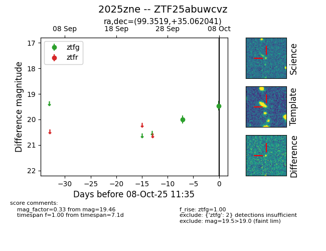

FINK: ZTF25abuwcvz
Lasair: ZTF25abuwcvz
ALeRCE: ZTF25abuwcvz
TNS: 2025zne
YSE: 2025zne
ZTF25abuwcvz (ztf,fink)
2025zne (tns,yse)
equatorial (ra, dec) = (99.3519,+35.06204)
galactic (l, b) = (179.7579,+12.55505)

last ztfg=19.46
2 ztfg detections